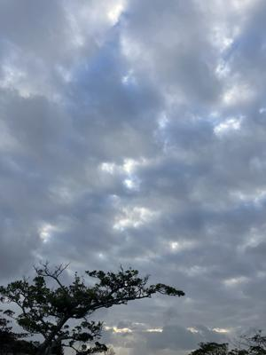

うるがいの話 ある日
最新: 在宅勤務でない【うるがいの話 ある日】とは 一日だけのプログです
『うるがいの話』の最新一日だけのプログで、通信料が少なく経済的だ。カニの画像をクリックすると全ての日付が載る『うるがいの話』サイトを表示します
|
|
【うるがいの話】 うるがい(ｳﾙｶﾞｲ urugai)とは、『もずくがに』の名前でとても大きくなります。 |
|---|---|
|
|
【カミマヤーの話】 猫のことを方言でマヤーといいます。カミマヤー（kamimayaa）とは、神の猫のことです。 |
|
【たながぁの音楽】 たながぁ（ﾀﾅｶﾞｰ tanagaa）とは手長えびのことで、何種類かあり大きいのは車 エビぐらいになります。 |

|
【ぶながぁの話】 ぶながぁ(ﾌﾞﾅｶﾞｰ bunagaa)とは、赤い髪の毛、赤い身体、そして身長は１ｍ２０ｃｍ ぐらい、川の蟹を食べているの目撃された。場所は沖縄県国頭郡大宜味村のと ある村僕の隣近所に住んでいる爺さんから、聞いた話です。 |
|
|
【ギーマの話】 ギーマ(giima)とは、山原の里山に咲くスズランに似た、 花を付けます。実は食べられます、 気が付くと口の周りが紫になっています。 |
2024年02月15日 (木）在宅勤務でない
21:07

ハローワークの求人情報では
就業場所
在宅勤務
就業場所に関する特記事項
＊２～３週程度研修後、在宅勤務になります。
（＊月に数日出勤する可能性有り）
７名のうち、３名は在宅勤務である。二人は住んで居る場所が北部なので、
そもそも那覇に来ることはできないだろう。フムフム、一人はわけありで前
職が同じビルだから在宅、ン、ありだな。中年の二人は、はて在宅でもいい
のでは、と思ったが新人同様の二人のトレナーという位置づけかなとオギさ
んはいう。オギさんと私は、研修の支援で研修の現地にいないといけない。
フムフム、研修が終われば、はれて在宅か。バイクでの通勤、それなりに難
儀である。ちなみ、オギサンとは研修場所で、大きなテーブルの向かいあっ
てＳＬＡＣＫでチャットしている。なるべく直接話さないこととしている、
今後なるであろう、在宅勤務を想定して。オギさんから、書き込みが・・・
今日の午後の作業です。
○○○のSkillCompassのスキルレベル判定 受けて下さい。
テストで半日見て下さい。
還暦をはるか前に過ぎたオッサン（ワタクシ）が、いまさらケッ何を考えて
いるのやら。受けたよ、２時半かけて。
２０時５８分 ビットコインの総資産 ￥２２、７６０！（↑１、１８３）